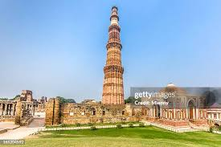
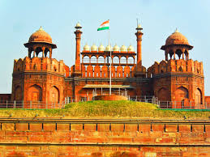

Monument
Taj Mahal
A celebrated Mughal-era monument in Agra, known for its marble architecture and ornamental detail.
India's built heritage includes ancient structures, sacred architecture, forts, palaces, monuments and urban traditions shaped by many periods and cultures.
A celebrated Mughal-era monument in Agra, known for its marble architecture and ornamental detail.

A monumental tower complex in Delhi that reflects layers of architectural and historical development.

A major Mughal fortification in Delhi and an important symbol of India's historical and national story.
Cultural heritage also includes knowledge, craftsmanship, religious architecture, traditional settlement patterns, historic landscapes and the practices associated with places.
Looking at heritage through this wider lens helps connect architecture with the people, skills and histories that gave it meaning.